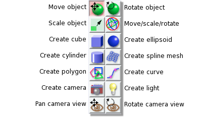
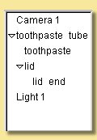
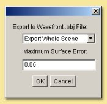
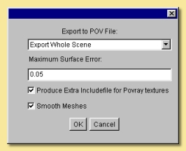
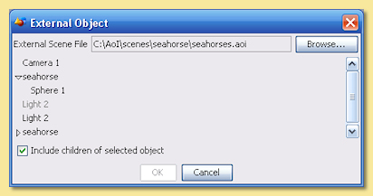
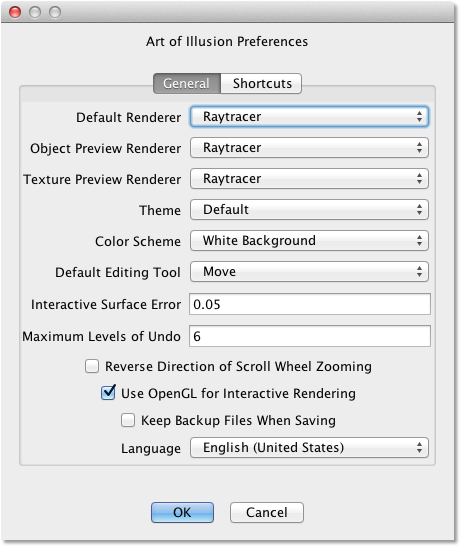

then drag in the view window whilst holding the left mouse button
down.
then drag in the view window whilst holding the left mouse button
down.

 then drag in the view window whilst holding the left mouse button
down.
then hold down CTRL while
dragging the right mouse button up (zoom out) or
down (zoom in) or
then drag in the view window whilst holding the left mouse button
down.
then hold down CTRL while
dragging the right mouse button up (zoom out) or
down (zoom in) or 
| The image on the right gives a brief description of each icon and the tools themselves are explained in more detail in relevant sections of this manual. |  |
The Spacebar can
be used to quickly switch between tools; pressing it will toggle
selection between the default tool (either Move or Move/Scale/Rotate, depending
on your preference settings) and the last tool used.
1.2.5 Object List and
Properties Panel
Finally, on the right hand side of the main screen are the Object List
(at the top bu default) and Object Properties Panel (at the bottom by
default).
Not surprisingly, the Object List
is a list of all the objects, including cameras
and lights, in the scene. Objects can be selected from this list for
editing simply by clicking on them. To select more than one object,
hold down the <ctrl> key while clicking or, to
select a range, click on an object and <shift> click on
another to select all the objects
in between.
Some types of object (e.g. curves, splines and meshes) allow editing
additional to the standard move, scale and rotate. Double-clicking on
objects in the Object List opens up the relevant editing tool (see editing_objects).
This list also allows the hierarchical arrangement of objects so that a
number of objects can be 'children' of other objects. Moving, scaling
and rotating 'parent' objects can result in the children objects also
being transformed depending on the tool setting (see Transforming
Objects). An object can be made a child of another object by
clicking on it and dragging it underneath the intended parent. An
arrowed bar shows the position of the object in the list. Indentation
of this bar indicates that the object can become a child of the object
above it in the list. Releasing the mouse button causes this to happen
and the parent object then has a down arrow displayed next to it to
indicate this hierarchy. Clicking on this arrow hides the children and
the arrow changes to a right pointing arrow.
Arranging a parent-child hierarchy between objects can also be useful
during animation.
|  | In the
example on the left, the object hierarchy for a toothpaste tube
scene is given. In this case, 'toothpaste' and 'lid' are children of
'toothpaste tube' and 'lid end' is a child of 'lid'. Transformations
made to 'toothpaste tube' can be set so as to affect all the objects
mentioned, whereas those applied to 'lid' can affect only 'lid' and
'lid end'. If required, the Object List can be hidden from view by selecting Scene -> Hide Object List. |
 |
The
properties that appear in this pane depend on the type of object(s)
selected. In this example, the properties for a sphere object
are displayed and can be edited. The Position and Orientation values can be entered directly and the texture and material can be set. The X, Y and Z radii of the object can also be set directly in the relevant text fields or can be altered via the control knobs to the right of each. To operate these, move the cursor over the knob and hold down the left mouse button while dragging left or right. To effect larger changes in value, the ALT key can be depressed while dragging. |
Another useful tool when you want to work on just a few objects is to lock other objects. When an object is locked, all clicks on it in the view are ignored. It is still visible (unlike when you hide it), but in all other ways it behaves as if it were not there. To hide objects, select them and click on Object -> Lock Selection. Alternatively right click the selection in the Object List or the object itself in one of the view windows and choose Lock Selection.
To unlock objects again, select them in the Object List (because of course you can't select them in the view) and click on Object -> Unlock Selection or right click the object(s) in the Object List and select Unlock Selection.
1.2.8 Grids
 |
The grid spacing determines the spacing between the
lines of the grid
seen in each window.
To actually see the grid, you need to tick the Show Grid box.
It is also possible to activate a Snap to Grid mode
which forces objects to be positioned at discrete locations rather than
allowing complete freedom of movement. Tick the Snap to Grid
box to enable this and enter the relevant number of Snap-to-Subdivisions.
This is the number of uniformly distributed allowable positions within
each grid square. So, the higher this number, the more freedom of
movement there is. In the example on the left, objects will snap to
every 1/10 of the grid spacing if the Snap to Grid
box is ticked. |
 |
New
opens up a new instance of Art of Illusion
for creating a new scene. This blank scene contains
by default a camera and a directional
light. Open opens up an existing Art of Illusion scene file in a separate instance of AoI. Open Recent shows a list of the last 10 scenes that were opened and lets you select one to open. Close closes the current scene file. If this is the only instance of AoI open, then it will exit completely from AoI. Import allows 3D models in formats other than AoI to be opened. The only supported file format is wavefront .OBJ and the importer also allows OBJ materials to be imported. Simply select the OBJ file when prompted and the material file will be automatically read and converted to an AoI texture. The model will automatically be scaled on import to better fit AoI scale units. |
 |
 |  |
| VRML export option dialogue | OBJ export option dialogue | Povray export option dialogue |
|
Link
to External Object This is a way of using an object from another AoI file in the current scene via a dynamic link to that file. Using this method, changes made to the source object automatically affect any files which have links to that object. This allows, for example, a character model to be created and kept in one file which can then be used in many other scenes - modifcations to the character can then be made to the original file which will then be applied automatically to any scene files that have the link. Selecting this option displays a dialogue, an example of which is shown on the right. This allows the selection of the source file and the object within that file that is to be linked to. You can choose the include the children of the selected object as well. |
 |
 |
Undo/Redo
undoes the last action or redoes the
last undo, including selections. Cut makes a copy of any currently selected objects in memory while deleting the originals. Copy is like Cut but the original objects are retained. Paste creates as new objects any that have been put in memory by Cut or Copy tools. Clear deletes all currently selected objects. Select Children selects all objects that are 'children' of currently selected objects. Select All selects all the objects in the scene. |
|  | There
are 2 tabs for preferences: General and Shortcuts. The
preferences under the General
tab are described below: The Default Renderer defines the default rendering engine used for rendering scenes. The Object Preview Renderer defines the default renderer used when carrying out render previews in the spline mesh and triangle mesh object editors. The Texture Preview Renderer defines the default renderer used in the various texture dialogues. The Theme defines the overall appearance of windows in AoI. A single default theme is included with the program. Others can be downloaded with the Scripts and Plugins Manager. Each theme provides a selection of Color Schemes to choose from. The Default Editing Tool is the tool that should be selected in a window when it first appears. You can also press the spacebar in a window to quickly toggle between the default tool and another selected tool. |
 |
The default shortcuts are: Delete - Delete Selection 1 - Display Mode: Wireframe 2 - Display Mode: Flat 3 - Display Mode: Smooth 4 - Display Mode: Textured 5 - Display Mode: Transparent E - Selection Mode: Edge/Curve F - Selection Mode: Face V - Selection Mode: Point/Vertex Page Down - Select Tool: Next Page Up - Select Tool: Previous Space - Select Tool: Toggle Default NumPad-0 - View: Toggle Perspective NumPad-1 - View: Front NumPad-2 - View: Back NumPad-3 - View: Left NumPad-4 - View: Right NumPad-5 - View: Top NumPad-6 - View: Bottom NumPad-7 - View: Camera 1 NumPad-8 - View: Camera 2 NumPad + - View: Zoom In NumPad - - View: Zoom Out |
|
File Functions: Ctrl+N - Create a new AoI file Ctrl+O - Open an existing AoI file Ctrl+W - Close the current AoI file Ctrl+S - Save the current AoI file with the same name Ctrl+Q - Quit Art of Illusion |
Edit Functions: Crtl+Z - Undo/Redo last action Ctrl+X - Cut the selected object(s) to the clipboard Ctrl+C - Copy the selected object(s) to the clipboard Ctrl+V - Paste the object(s) from the clipboard into the file Ctrl+A - Select all the objects in the scene Delete - Clear selected object(s) |
Object Functions: Ctrl+E - Edit Object Ctrl+L - Edit the object layout Ctrl+T - Open the Transform Object Dialogue Ctrl+U - Set Texture for currently selected object(s) Ctrl+M - Set Material for currently selected object(s) Arrow keys can be used to move/rotate selected object(s) in the plane of the currently selected view window if the Move/Rotate Icons are on. Holding Ctrl while pressing the up/down keys moves/rotates in the other axis. Holding ALT while pressing the arrow keys moves/rotates the object by 10 pixels. |
| Animation Functions: Ctrl+P - Preview Animation Ctrl+] - Move forward one frame Ctrl+[ - Move backward one frame Ctrl+J - Jump to time ... Ctrl+D - Edit selected keyframe Ctrl+K - Keyframe selected track(s) Ctrl+Shift+K - Keyframe modified tracks Ctrl+Shift+A - Select all tracks of selected objects |
Scene Functions: Ctrl+R - Open the Render dialogue window Ctrl+Shift+R - Render immediately with current settings Ctrl+B - Toggle between one view mode and four view mode Ctrl+G - Open Grid dialogue window Ctrl+F - Frame selection with camera Ctrl+Shift+F - Frame scene with camera Ctrl+Shift+U - Open Textures dialogue window Ctrl+Shift+M - Open Materials dialogue window |
Mesh Editor Functions: Ctrl+Z - Undo/redo last action Ctrl+A - Select all vertices/edges/faces Ctrl+X - Extend selection Ctrl+F - Toggle freehand selection mode Ctrl+W - Display as quads Ctrl+M - Open Mesh Tension dialogue Ctrl+E - Edit selected point(s) Ctrl+T - Transform selected point(s) Ctrl+B - Bevel/Extrude selection Ctrl+P - Open texture parameters dialogue Ctrl+S - Set smoothness for selected vertices/edges Ctrl+R - Render preview Ctrl+D - Open Edit Bone dialogue Ctrl+G - Open Grid dialogue Arrow keys can be used to move selected points one pixel at a time in the plane of the view if the Move Icon is selected. Holding Ctrl while pressing the up/down keys moves in the other axis. Holding ALT while pressing the arrow keys moves the points by 10 pixels. |